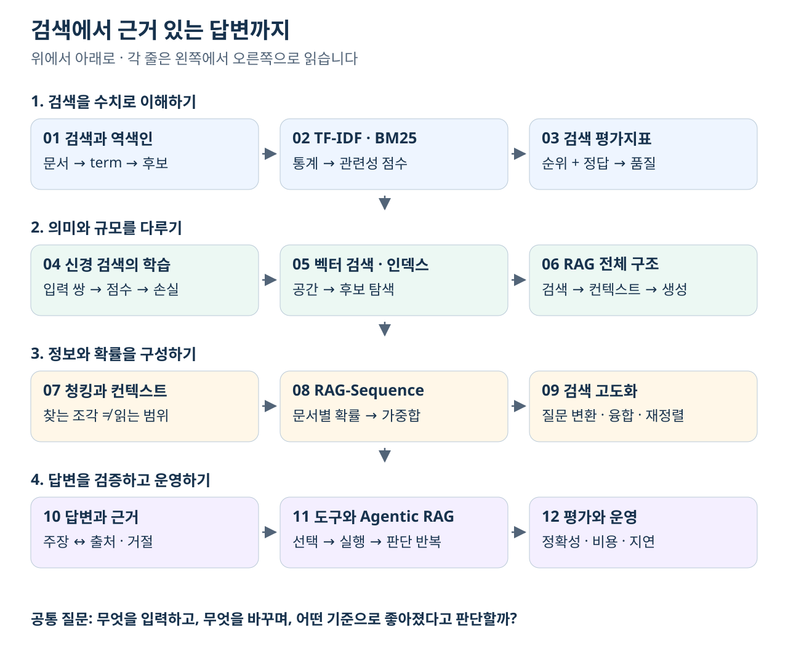

RAG 학습 안내 — 그림과 계산으로 이해하는 검색 증강 생성
이 교재는 문서에서 필요한 근거를 찾고, 그 근거로 답한 뒤 품질과 비용을 평가하는 과정을 설명합니다. 필요한 개념·수식·예제·그림·확인 질문을 이 폴더 안에 담았습니다. PDF·HTML·실습 노트북이나 다른 분야의 교재를 열어야 다음 설명을 이해하는 구조로 사용하지 않습니다.
전체 흐름부터 보기

그림 읽기: 위에서 아래로, 각 줄은 왼쪽에서 오른쪽으로 읽습니다. 첫 줄은 검색 결과를 만들고 측정하는 방법, 둘째 줄은 의미 표현과 대규모 탐색을 RAG에 연결하는 방법입니다. 셋째 줄은 문서를 나누고 확률과 후보를 조합하는 방법, 마지막 줄은 답변의 근거·반복 행동·운영 결과를 확인하는 방법입니다. 학습 순서의 화살표이지 모든 RAG가 열두 단계를 그대로 실행한다는 뜻은 아닙니다.
모든 장을 관통하는 구분은 네 가지입니다. 검색 점수, 관련성 정답, 근거에 충실한 답변, 실제로 맞는 답변은 같은 것이 아닙니다. 검색기가 유사한 문서를 찾았어도 필요한 예외 조항을 놓칠 수 있고, 잘못된 문서를 충실히 읽은 답변도 사실상 틀릴 수 있습니다.
본문 목차
| 장 | 해결할 질문 |
|---|---|
| 01. 검색의 기본과 역색인 | 단어를 포함하는 문서를 어떻게 찾고 후보를 만들까? |
| 02. TF-IDF와 BM25 | 빈도·희귀도·문서 길이가 점수에 어떻게 반영될까? |
| 03. 검색 평가지표 | 같은 순위를 여러 지표로 측정하면 무엇이 달라질까? |
| 04. 신경 검색과 검색기 학습 | 인코더 구조와 학습 신호가 검색을 어떻게 바꿀까? |
| 05. 벡터 검색과 인덱스 | 모든 벡터를 보지 않고 가까운 후보를 어떻게 찾을까? |
| 06. RAG의 전체 구조 | 인덱싱과 질의 단계에서 어떤 데이터가 이동할까? |
| 07. 청킹과 컨텍스트 구성 | 검색하는 조각과 생성기에 보여줄 범위를 어떻게 정할까? |
| 08. RAG-Sequence의 학습과 디코딩 | 문서 확률과 생성 확률을 어떻게 혼합하고 학습할까? |
| 09. 검색 고도화 | 질문 변환·융합·재정렬을 어떤 실패에 적용할까? |
| 10. 답변 생성과 근거 관리 | 주장·출처·조건·거절을 어떻게 확인할까? |
| 11. 도구 사용과 Agentic RAG | 도구 사용을 학습하는 것과 실행 중 반복하는 것은 어떻게 다를까? |
| 12. RAG 평가와 운영 | 검색·답변·거절·비용·지연을 어떻게 함께 평가할까? |
처음에는 01→12 순서로 읽으세요. 응용 흐름을 먼저 잡으려면 06→07→10→03→12를 읽은 뒤 검색의 원리와 계산을 01→02→04→05→09에서 보충하고, 08·11장으로 확장할 수 있습니다. 이는 학습 경로이며 시험 범위를 뜻하지 않습니다.
그림을 중심으로 공부하기
시각화 학습 안내는 어떤 주제에 어떤 그림이 도움이 되는지 정리합니다. 각 장의 이미지는 본문 가까이에 놓고 입력 → 변환 → 출력, 또는 좌표·축 → 조건 변화 → 결과 해석 순서로 설명합니다. 색뿐 아니라 문서 ID·단계 번호·기호로 대상을 식별할 수 있습니다.
- 그림의 제목과 범례로 비교 대상을 확인합니다.
- 본문의 작은 예제와 그림의 숫자를 하나씩 대응시킵니다.
- 빈도·후보 폭·검색 개수·근거 하나를 바꾼다면 무엇이 달라질지 예상합니다.
- 표와 식으로 다시 계산합니다. 그림의 모양만 외우지 않습니다.
- 확인 질문을 먼저 풀고 해설을 읽습니다.
SVG 도식·그래프는 확대해도 선과 글자가 선명합니다. BM25의 화면 발췌도 이 폴더의 PNG로 포함되어 있으며 움직이는 웹페이지를 열 필요가 없습니다. 정지 화면에 보이는 슬라이더는 조작 대상이 아니라 촬영한 조건을 나타냅니다.
선수 개념과 기호
기초 개념은 필요한 장에서 다시 설명합니다. 02장은 빈도와 로그, 04장은 토큰·BERT·Attention·softmax와 손실, 05장은 벡터 거리와 정규화, 08장은 조건부확률과 확률의 가중합을 예제로 연결합니다.
- 질문은
q또는x, 문서는d또는z, 답변은y로 씁니다. 각 장에서 역할을 다시 정의합니다. K는 검색 또는 반환 개수입니다. BM25의k₁과 RRF의 상수c는 다른 설정입니다.B는 04장에서 배치 크기, 08장에서 문서별 beam 크기입니다. 같은 글자라도 문맥별 정의를 확인합니다.- 글자·토큰·청크·문서는 다른 단위입니다. 벡터의 차원과 문서 수, 점수와 확률도 구분합니다.
- 수치 예제는 중간 계산을 유지하고 표시 단계에서 반올림합니다. 특별히 적지 않은 예제의 기업·정책·확률은 학습용 가상 조건입니다.
용어가 막히면 용어집으로 돌아오세요. 논문·공식 문서 링크는 선택적인 출처 확인용이며, 본문 이해에 필요한 정의를 대신하지 않습니다. 제품·가격·벤치마크의 예시는 조건과 함께 해석하며 현재의 보편적인 우열로 사용하지 않습니다.
이 자료는 학습용 교재입니다. 실제 출제 범위를 확정하지 않으며, 외부 API나 학습·실습 전체 실행 결과를 보장하지 않습니다.